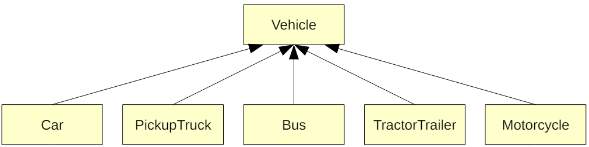
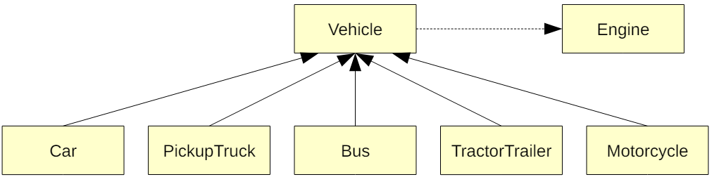
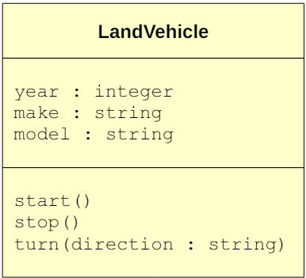

Inheritance
As you know, the object-oriented paradigm attempts to mimic the real world, particularly in how it is made up of objects that interact with each other. In the real world, objects also have relationships, and this is useful! For example, a person inherits traits from parents. Specifically, a person inherits physical traits (e.g., height, hair color, etc) and behavioral traits (e.g., manner of speaking). This behavior is represented in the object-oriented paradigm as well.
To illustrate how this is done, let’s consider the application that models vehicle traffic described earlier. Let’s begin with the car class that serves as the blueprint for a car in the traffic simulation. What might its state and behavior look like? That is, what are cars made up of? What can they be, and what can they do? Very quickly, we can think of attributes such as year, make, model, mileage, and so on. This represents the state of a car. We can also think of behaviors such as start, move, turn, park, and so on. In fact, we could quickly design a car class now that we know how to do so in Python!
Now let’s consider a pickup truck class that serves as the blueprint for a pickup truck in the traffic simulation. Its state would most likely be very similar to that of the car class. And so would its behavior. In fact, not much differentiates a car from a pickup truck. They both generally have the same attributes and do the same thing. Imagine designing the classes for a car and a pickup truck. You may think that the classes would share many similarities in both state and behavior (and you would be right).
Now imagine maintaining such an application. Suppose that the implementation of some behavior that is similar across cars and pickup trucks needs to be modified. This would require changing both the car and pickup truck classes because code is duplicated across the two classes. Dealing with this type of thing increases the likelihood of bugs. The beauty of the object-oriented paradigm is that it allows the inheritance of state and behavior from class-to-class, just like we inherit traits from our ancestors!
The state and behavior that is shared among the car and pickup truck classes in the traffic simulation application could be captured in a more general class. Such a class could, for example, be called a Vehicle. All of the state and behavior that is shared among any type of vehicle would be defined in this class. Specific kinds of vehicles (like cars and pickup trucks) would then inherit these traits. Any modifications to the state and behavior of vehicles of all types could be made in the vehicle class and be automatically applied to all types of vehicles!
In fact, let’s amend the class diagram shown earlier by including a vehicle class that defines the overall state and behavior that all types of vehicles (cars, pickup trucks, buses, tractor trailers, and motorcycles) share: 
Note how all of the classes that inherit state and behavior from the vehicle class now have solid arrows pointing toward the vehicle class. In a class diagram, this indicates an inheritance relationship. Specifically, the car, pickup truck, and other classes shown at the bottom of the class diagram inherit state and behavior from the vehicle class.
A class that defines state and behavior that is inherited by other classes is called a superclass. The classes that inherit from it are called subclasses.
In the class diagram above, the class Vehicle is a superclass of the class Car, and the class Car is a subclass of the class Vehicle.
The inheritance relationship is often called the is-a relationship. This is actually quite clear from the class diagram: a Car is a Vehicle, a Bus is a Vehicle, and so on. There is also the has-a relationship. This represents a composition relationship and refers to the state of an object. Specifically, we often note the has-a relationship in class diagrams for classes that contain other classes.
In terms of how this is accomplished in Python source code, we merely need to specify the superclass in a subclass’ class definition. For example, consider the class Car (which is a subclass of the superclass Vehicle). To note this relationship in Python, we merely need to define the Car class as follows:
class Car(Vehicle):
...This establishes the relationship that the class Car is a subclass of the class Vehicle, and that the class Vehicle is a superclass of the class Car.
Next, consider an engine class that defines everything that an engine can be and do. Clearly, a car has an engine. So does a pickup truck, a bus, a motorcycle, and so on. In general, all of these vehicles have an engine. Since all vehicles have an engine, in the design of the application we may include the engine class as part of the state of the vehicle class. Specifically, we would include an instance of the engine class in the vehicle class. All subclasses of the vehicle class would then inherit this attribute. We note the has-a relationship in a class diagram with a dashed arrow that point toward the composed class. Here is an amended class diagram that now includes the engine class:

This important relationship illustrates that objects can, in fact, create other objects! In the example above, a vehicle can create an instance of an engine. Although the state and behavior of all vehicles is defined in the vehicle class, nothing stops any of its subclasses from redefining or specializing these attributes or behaviors. That is, although a car and a motorcycle both have an engine, they are quite different. Simply because the engine class is included in the vehicle class does not prevent a car or a motorcycle from specializing the engine and uniquely setting its state.
Let’s further illustrate the concept of inheritance by expanding the world of vehicles. In this expanded world, there are two types of vehicles: land vehicles (that move on land) and air vehicles (that fly in the air). The types of land vehicles that exist include all of the vehicles described earlier (e.g., cars, pickup trucks, etc), and the types of air vehicles that exist include airplanes, helicopters, and ultralights. While we’re at it, let’s define multiple types of engines for land vehicles (e.g., V-6, V-8, and I-6), and multiple types of engines for air vehicles (e.g., turbo prop and jet engine).
Try to represent this expanded world with a class diagram.
Often, we include the state and behavior of classes in the class diagram. Suppose that the class LandVehicle has the instance variables year, make, and model, and the functions start, stop.

Typically, we include the types of instance variables and adhere to the following format:
variable_name : variable_typeFor functions, we include the names and types of any parameters and adhere to the following format:
function_name(parameter1_name : parameter1_type, ...)You have probably noticed that this extension of class diagrams makes it quite easy to implement the source code for the class!